캡슐 준비·취소·출발, F5 3인칭, 방 이동, 공방 협동 성공. 19개 공간의 런타임 생성 누락·예외 0.
A LITTLE WORLD, IN PROGRESS
Cube Escape
제작 노트.
네 마리 토끼, 주사위 하나.
방을 옮길 때마다 다른 게임이 시작되는 작은 세계.
게시 갱신 2026-11-15 11:41 KST

방 시안 & 배치
방 전체 → 소품 배치 → 실제 조립.
갤러리 열기 →02 / OBJECTS새 오브젝트
21묶음의 물건과 가동부 미리보기.
갤러리 열기 →03 / CHARACTERS캐릭터 & 모션
네 체형의 맨몸 모델과 수정 후보.
갤러리 열기 →04 / ARCHIVE전체 제작 기록
기존 59항목, 이전 시안·모션·효과음.
기록 열기 →PLAY CHECK / 2026.11.15
실제로 움직이는 곳까지.
개인 태엽 삽입 → 자기 캡슐 탑승 → 전원 준비 → 아래로 하강 → 주사위 방 → 미니게임 방.
새 몸체와 독립 스킨의 게임 적용, 손·팔·춤·착석, 최종 캡슐 아트, 각 방 규칙과 충돌·음향·밸런스.


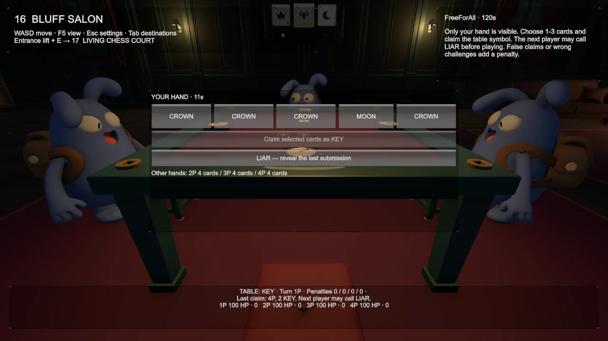
19개 공간 생성 확인은 18개 미니게임 전체 완주를 의미하지 않습니다. 현재 실행 모델은 기존 파랑+가방이며 새 캐릭터 후보와 구분합니다. 이 사이트는 제작 보고서입니다.
19개 공간과 연결된 미니게임 규칙 보기
주사위·보드 방
주사위 · 다음 목적지 선택
26 × 26m · 직사각 · JSON 배치 45개시계공 태엽 공방
Clockwork sequence · 협동 · 150초
16 × 20m · 직사각 · JSON 배치 4개긴 압력 갤러리
Pressure quartet · 협동 · 150초
14 × 42m · 직사각 · JSON 배치 23개분실물 분류실
Parcel relay · 2대2 · 120초
30 × 30m · T형 · JSON 배치 25개십자형 충전실
Four-cell reactor · 협동 · 150초
26 × 30m · 십자형 · JSON 배치 30개달빛 수정 온실
Moonwell recipe · 협동 · 150초
28 × 28m · 팔각형 · JSON 배치 28개우주 정비 교차로
Orbital impostor · 비밀 역할 · 180초
28 × 28m · 십자형 · JSON 배치 22개보급창 전투방
Last supply · 개인전 · 120초
40 × 46m · 직사각 · JSON 배치 72개팔각 결투장
Brass duel · 2대2 · 90초
28 × 28m · 팔각형 · JSON 배치 12개긴 씨앗 협곡
Seed siege · 2대2 · 180초
28 × 64m · 직사각 · JSON 배치 32개정전 발전소
Blackout escape · 협동 · 240초
22 × 34m · L형 · JSON 배치 22개테이블 게임실
Pair Gomoku · 2대2 · 180초
18 × 18m · 직사각 · JSON 배치 24개바닥 없는 절벽
Cliff rescue · 협동 · 240초
28 × 44m · 직사각 · JSON 배치 0개심연 유리다리
Glass crossing · 개인전 · 180초
20 × 110m · 직사각 · JSON 배치 0개태엽 카트 서킷
Windup circuit · 개인전 · 150초
54 × 74m · 팔각형 · JSON 배치 20개블러핑 살롱
Bluff salon · 개인전 · 150초
24 × 18m · 직사각 · JSON 배치 35개전투 체스 코트
Living chess · 2대2 · 150초
24 × 28m · 팔각형 · JSON 배치 4개태엽 벌레 정원
Clockmite survival · 협동 · 120초
36 × 40m · 팔각형 · JSON 배치 36개색상 회전무대
Colour sweep · 개인전 · 75초
26 × 30m · 팔각형 · JSON 배치 7개11-15 11:41 · BELLY SKIN WEIGHTS / BLENDER CANDIDATE
배가 가로로 접히던 부분을 줄였습니다.
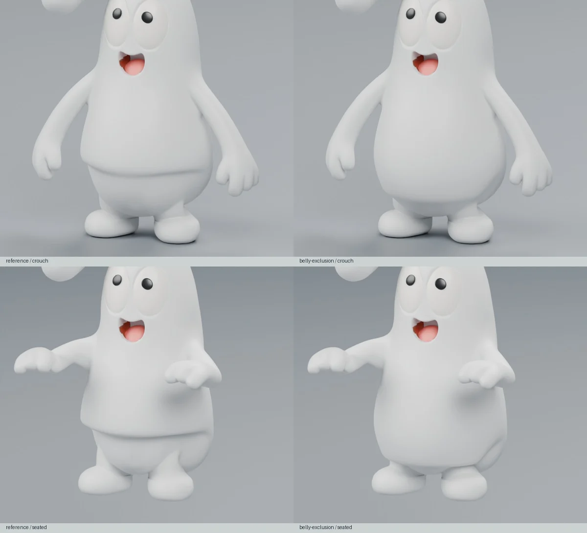
허벅지와 보조 본이 배 앞면까지 끌어올리던 영향을 줄이고, 이 영역이 골반을 따라 움직이도록 조정했습니다. 접근·점프·착석의 관절 움직임은 이전 15초 후보와 같습니다.
1,448개 정점의 가중치를 수정했습니다. 원형 메시·UV·83개 본의 길이, 손·팔과 발바닥 가중치는 유지합니다. 첫 초안에서 생긴 꼬리 주변 경계는 후면 비교로 발견해 제외했습니다.
배의 큰 가로 접힘은 줄었지만 다리 뿌리와 겨드랑이의 국소 접힘은 남습니다. 깊은 바닥 춤에 그대로 시험했을 때는 배가 지면을 통과해 적용하지 않았습니다. 이번 수정은 착석 후보이며 모든 모션에 통용되는 완성 리그가 아닙니다.
15초 한 번 재생 미리보기 →
후면 비교와 검증 범위
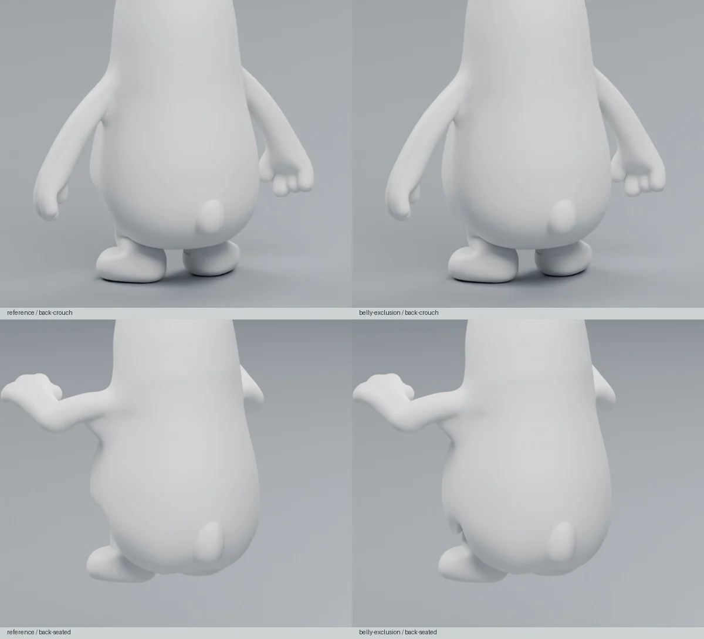
225장 Blender 렌더와 901개 시점의 손 모양·본 스케일·발 접지·검토 가구 간격 검사를 진행했습니다. GLB/FBX를 다시 가져와 24개 자세도 대조했습니다. 자세 시트와 표본 프레임 검토이며 연속 영상의 최종 자연스러움 승인은 아닙니다.
Unity에는 아직 새 v12를 적용하지 않았습니다. 기존 파란 플레이어와 별도 v10 검토 모델을 유지합니다. 바닥 내려오기·게임 의자 상호작용·다른 체형·깊은 바닥 춤은 계속 작업해야 합니다.
11-15 11:26 · CHAIR APPROACH / BLENDER CANDIDATE
바닥에서 다가와 발판에 올라가는 동작을 붙였습니다.
일곱 번의 짧은 걸음으로 의자 옆에 다가옵니다. 발을 번갈아 딛고 책상을 향한 뒤, 웅크렸다가 옆으로 짧게 뛰어 발판에 착지합니다. 이어서 앞서 만든 손 짚기·착석·손 회수 동작으로 연결합니다.
짧은 다리를 늘려 높은 발판에 억지로 맞추지 않았습니다. 몸체·UV·가중치와 83개 본을 보존했고, 손·전완 길이와 손바닥 형상도 유지합니다. 공중 회전 초안은 가구 통과가 생겨 제외했습니다.
이번에는 Blender 후보만 만들었습니다. Unity의 별도 검토 모델은 이전 v10이며 기본 파란 플레이어도 그대로입니다. 웅크릴 때 배·골반의 주름이 남고, 방향 전환과 접근 속도는 더 다듬어야 합니다. 바닥으로 내려오는 동작과 게임 의자 상호작용은 아직 없습니다.
15초 한 번 재생 미리보기 →
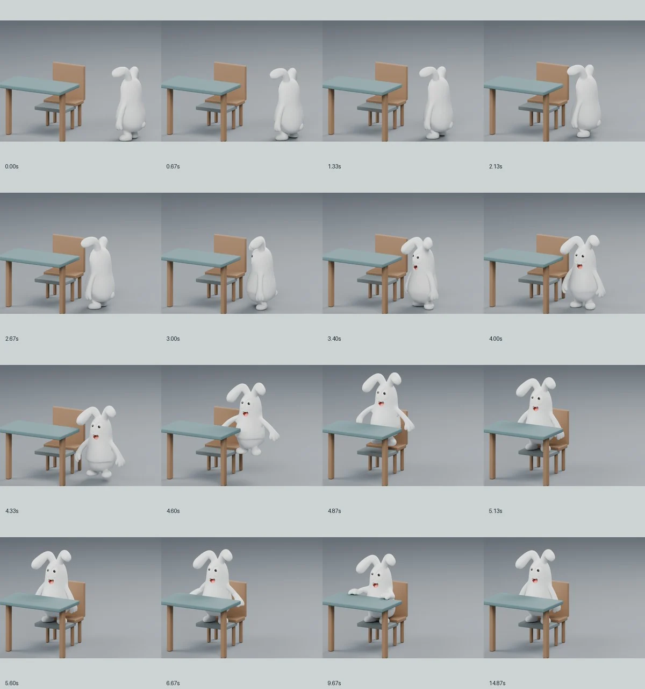
225장 렌더와 901개 시점의 관절·손 모양·발 접지 검사를 진행했습니다. GLB·FBX를 다시 가져와 24개 자세를 대조했습니다. 검토용 가구 안쪽 정점 통과 검사는 통과했지만, 전체 자기충돌·게임 물리·최종 자연스러움의 승인은 아닙니다. 시작과 끝 위치가 다르므로 반복 영상으로 표시하지 않습니다.
11-15 11:01 · HAND RETURN / UNITY REVIEW CANDIDATE
탁자에서 손을 거두는 동선을 바꿨습니다.
탁자에서 손을 살짝 띄운 뒤, 뒤로 빼면서 허리 옆으로 내립니다. 들어 올린 준비 자세를 그대로 되짚으며 팔이 다시 높이 벌어지던 부분을 바꿨습니다. 두 손은 0.1초 차이로 움직입니다.
손과 전완을 줄이거나 늘리지 않았습니다. 몸체·UV·가중치와 83개 본의 길이를 보존하고 손 회수 구간만 수정했습니다. 처음 손을 올리는 구간과 몸통·다리 동작은 이전 후보를 유지합니다.
겨드랑이·팔꿈치의 국소 주름과 바닥에서 의자에 올라가는 동작은 아직 남아 있습니다. 현재는 발판에서 시작하는 9초 비교 후보이며, 완성된 착석 동작이나 사용자 승인 상태가 아닙니다.
9초 반복 미리보기 →
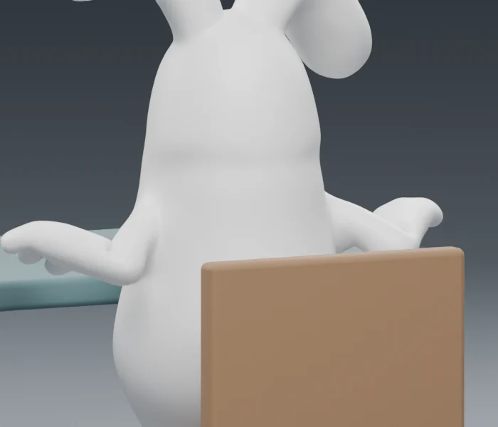
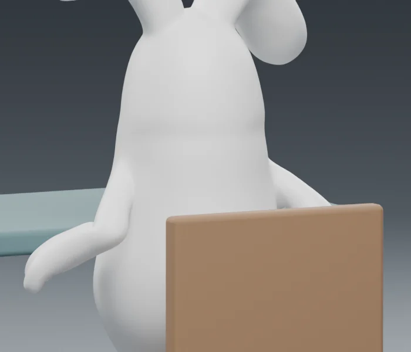
Unity에서도 따로 재생해 확인했습니다.
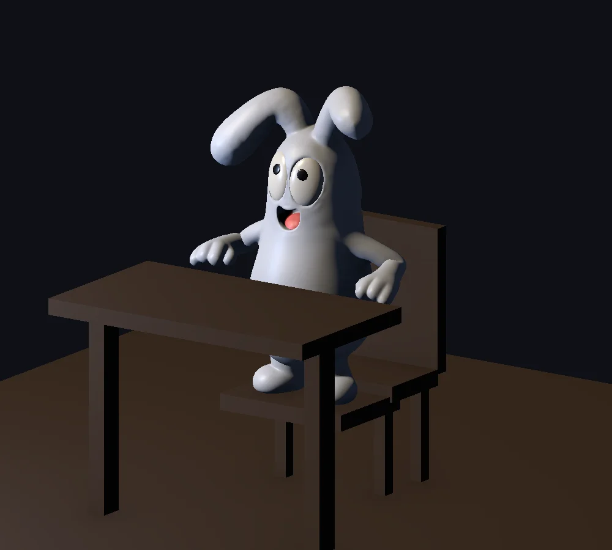
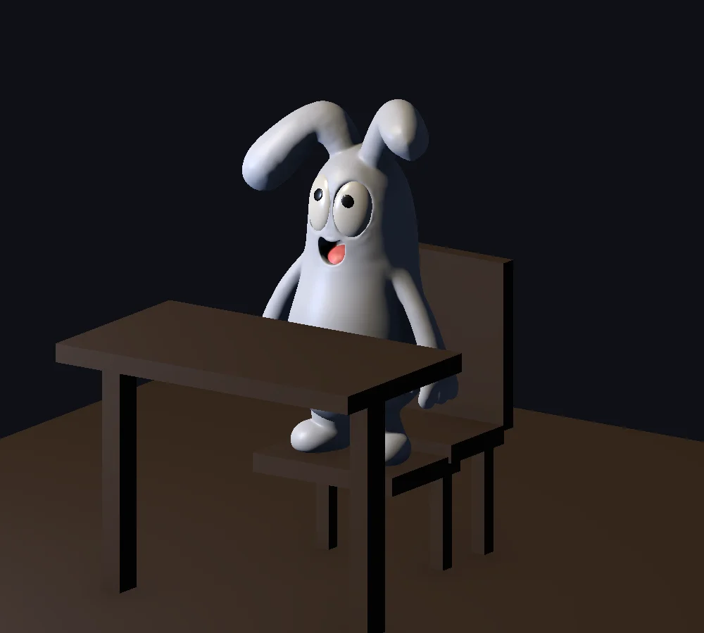
실제 311프레임과 한 바퀴 이상의 재생을 확인했습니다. 24개 자세의 변형 표면 31,008개 표본을 Blender와 대조했으며 최대 차이는 약 0.121mm입니다. Play 종료 뒤 검토 무대·임시 설정을 정리했습니다.
이 검증은 별도 후보의 재생·변형 확인입니다. 게임 속 의자 상호작용·충돌이나 다른 몸체 검증을 뜻하지 않습니다. 위 영상은 실제 Blender 렌더 135장으로 만든 미리보기이며 게임 녹화가 아닙니다.
UNITY PLAY / 11.15 10:45
보일러를 세우고, 실제 압력계로 바꿨습니다.
벽을 따라 보일러10대를 배치하고 네 밸브 옆에 독립 압력계를 연결했습니다. E를 누르면 바늘이 올라가고, 놓으면 내려갑니다. 바늘의 초록 구간을 게임의 안전 범위40–60%와 맞췄습니다. 원본 재질의 색공간·발광값과 계기 뒤로 비치던 글자도 수정했습니다.
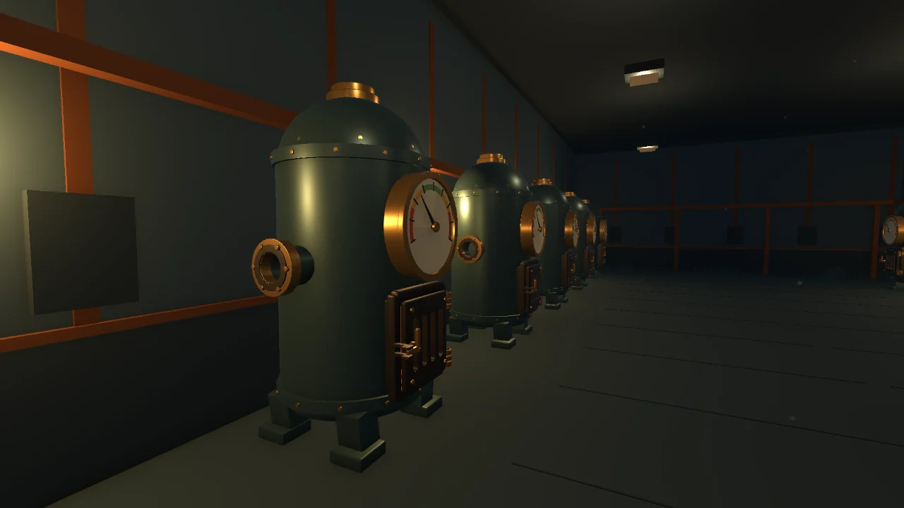
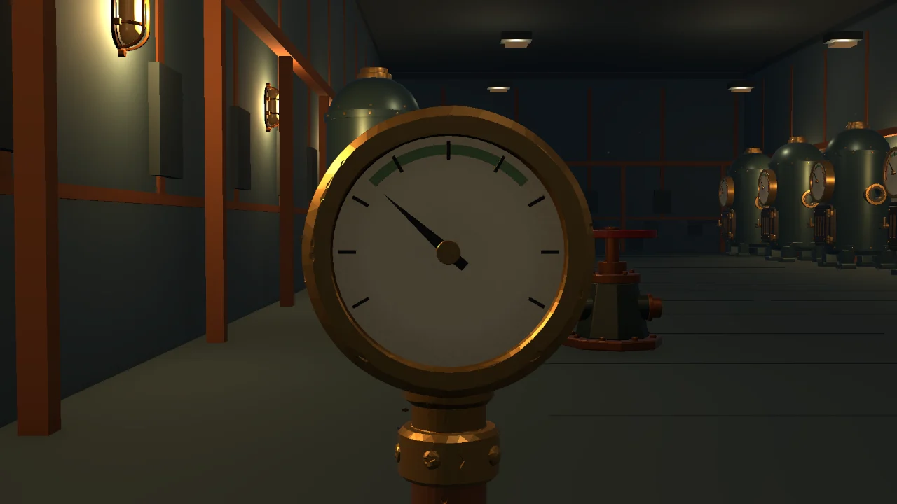
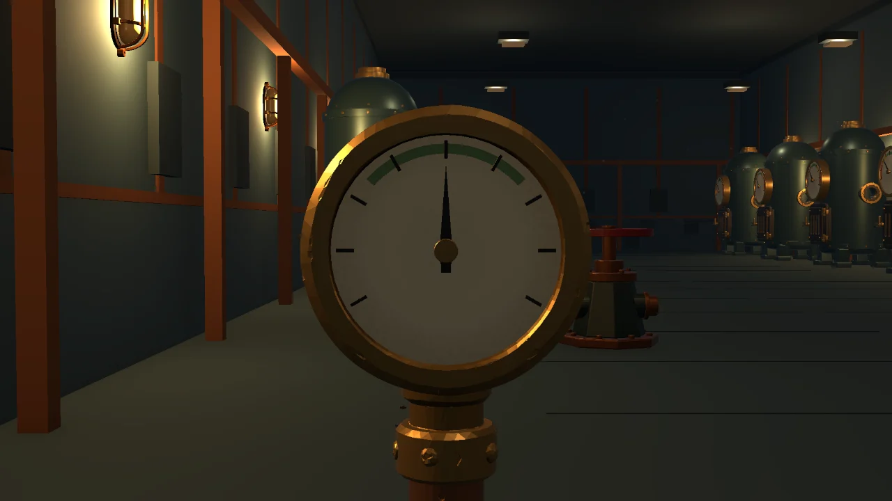
실제 Play에서 자동 E 입력과3봇이 압력을 안전 범위에8초 유지해 성공 결과까지 진행했습니다. 가운데 통로3곳은 각각36m를 통과했고, 새 물건14개는 부딪히면 멈췄습니다. 바닥·발·몸통에 맞춘 고정 충돌82개를 사용합니다.
입장·준비 상태는 스크립트로 설정했으며, 보행은 CharacterController.Move 검사입니다. 이번 검증은 캡슐부터의 전체 여정이나 사람이 직접 조작한 완주가 아닙니다. 보일러 본체의 장식 계기는 아직 고정이며, 네 독립 압력계만 게임 수치와 연결됐습니다. 손잡기 모션·전용 소리·연결 배관·새 벽과 천장·최종 사용자 승인은 남았습니다. Play는 종료했고 씬의 미저장 변경은 없습니다. 이 방 작업에서는 기존 캐릭터를 유지했습니다. 이후 착석 v10 검토는 위 별도 기록을 따릅니다.
11-15 10:25 · SEATED REACH / BLENDER CANDIDATE
탁자에 손을 올리는 동선을 다시 잡았습니다.
양팔을 옆으로 높게 벌리는 준비 자세를 낮추고 좁혔습니다. 먼저 몸 가까이에서 손을 들어 탁자 모서리를 넘고, 앞으로 뻗으면서 손바닥을 돌려 내려놓습니다. 앉은 뒤 손 접촉 위치와 다리 동작은 유지했습니다.
손을 낮추기만 한 첫 시도는 탁자를 통과했고, 손바닥 방향을 고정한 다음 시도는 손목을 과하게 꺾어 제외했습니다. 현재 후보는 손·전완을 압축하거나 늘리지 않으며, 원래 메시·UV·가중치·83개 본의 길이를 보존합니다.
이번 v9는 Blender 동선 비교 후보입니다. 팔꿈치가 옆으로 들리던 첫 초안을 낮췄지만, 겨드랑이 접힘과 전완 회전 타이밍은 더 다듬어야 합니다. 기존 Unity 검토는 아래 v8이며, 이번 동선을 게임에 적용하거나 사용자 승인받은 상태는 아닙니다.
9초 반복 미리보기 →
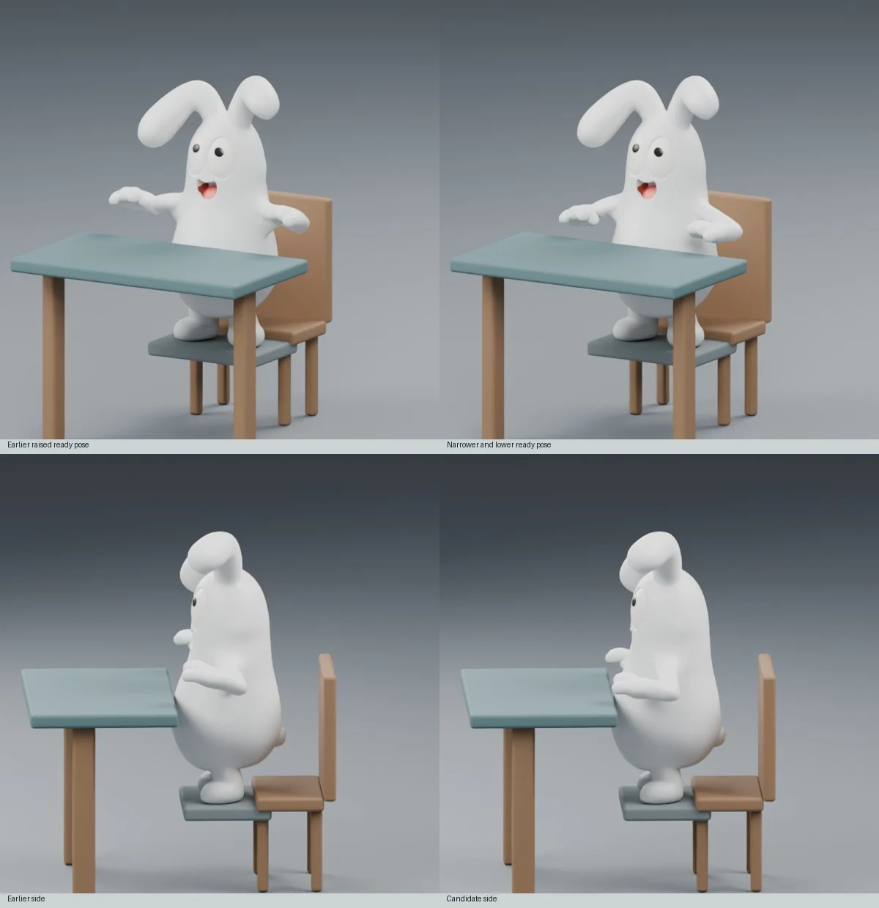
실제 Blender 렌더 135장과 9초 영상·반복 미리보기를 만들었습니다. 541개 자세와 중간 시점에서 검토 가구 안쪽의 몸체 정점 관통을 검사했습니다. 전체 자기교차·게임 물리 검증과는 별개입니다. 발판에서 시작하며 바닥에서 의자까지 다가가는 동작은 아직 없습니다.
11-15 10:02 · SHOULDER CORRECTIVE / REVIEW CANDIDATE
손 모양을 유지하면서 어깨 주변을 다듬는 중입니다.
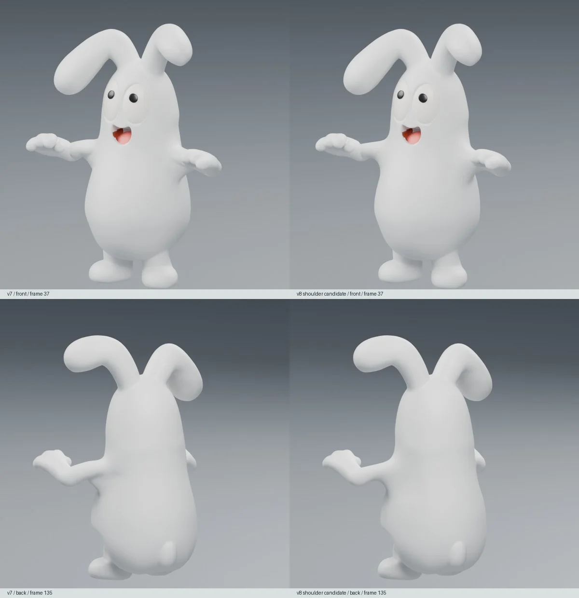
청록 착석 동작의 겨드랑이 주변에 자세별 보정을 더했습니다. 원래 몸체와 본 길이, 손·팔의 관절 움직임은 유지합니다. 일부 돌출은 줄었지만 팔 아래의 접힘과 볼륨은 더 다듬어야 합니다.
Unity로 가져오면서 생긴 잔물결 음영과 보정값이 음수로 넘어가는 문제도 확인했습니다. 검토 후보에서는 기존 몸체의 표면 정보를 유지하고 위치 보정만 적용했으며, 원래 보정 곡선을 복원했습니다. 자세에 따른 어깨 음영은 아직 추가 검토가 필요합니다. 내보내기 단위도 맞춰 작은 어깨 보정이 누락되는 문제를 수정했습니다. 541개 시점에서 보정 범위와 기존 관절 곡선 보존을 검사했습니다.
v7·v8은 별도 검토 메뉴에서 비교합니다. 의자까지 접근하는 동작, 깊은 바닥 춤, 다른 체형은 아직 미완성입니다. 이 보정은 착석 한 동작용이며 최종 품질 승인은 아닙니다.
9초 반복 미리보기 →
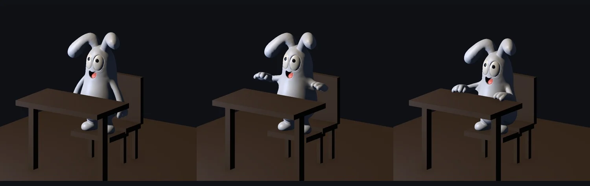
실제 Unity 재생과 보정값 변화를 확인하고, 25개 자세의 표면 표본 32,300개를 Blender와 대조했습니다. 기본 플레이어·저장 씬은 유지했으며 테스트 뒤 임시 화면과 설정을 복원했습니다. 위 동영상은 Blender 렌더로, 게임 녹화가 아닙니다.
11-15 09:17 · UNITY REVIEW / PLAYER UNCHANGED
새 청록 몸체의 착석 후보를 Unity에서 재생했습니다.
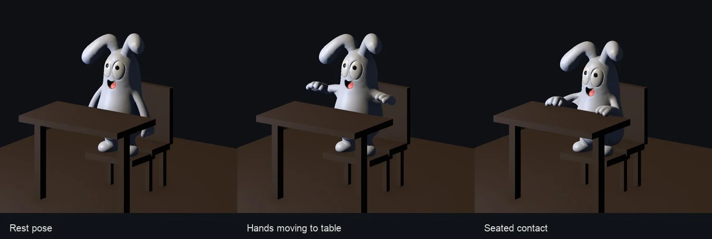
치장 없는 몸체, 눈·입의 별도 재질, 83개 본과 9초 착석 루프를 별도 검토 프리팹으로 연결했습니다. 입 텍스처의 UV와 최대 8개 본 가중치를 맞추고, Blender와 Unity의 변형 표면 7,752개 표본을 대조했습니다. 최대 차이는 약 0.077mm입니다.
실제 프레임과 관절 회전·루프 진행을 확인했습니다. 검토 화면 닫기와 Play 종료 뒤 메뉴·스킨 설정 복원, 임시 오브젝트 제거도 확인했습니다. 기존 파란 플레이어와 저장된 게임 씬은 유지했습니다.
이것은 별도 검토 프리팹의 재생 확인입니다. 게임 속 의자 상호작용·충돌·다른 체형 검증은 아닙니다. 겨드랑이 접힘, 의자 접근, 깊은 바닥 춤은 계속 수정해야 합니다.
11-15 08:49 · SKIN WEIGHT REPAIR / CANDIDATE
팔을 들 때 옆구리가 끌려 나오던 부분을 수정했습니다.

청록 체형의 몸통까지 번진 팔 가중치를 수정한 후보입니다. 메시의 실제 연결 구조로 몸통과 팔을 구분해 가중치 1,953개 정점을 조정했습니다.
원래 몸체·UV·83개 본의 길이와 동작은 유지했습니다. 손 가중치와 검토한 14개 자세의 손 모양은 이전 후보와 같습니다. 팔을 올렸을 때 등과 옆구리 돌출이 줄어든 것을 전후 렌더에서 확인했습니다.
겨드랑이 국소 접힘·깊은 바닥 춤·의자 접근·다른 체형은 남아 있습니다. 9초 착석 비교 후보이며 Unity 반영이나 최종 품질 승인이 아닙니다.
실제 렌더 135장, GLB·FBX 재가져오기와 541개 자세·중간 프레임의 검토 가구 안쪽 정점 검사를 확인했습니다. 전체 메시 자기교차·Unity 물리 검증과는 별개입니다.
11-15 08:27 · SEATED TRANSITION / CANDIDATE
손을 옮기고 빼는 구간을 더 여유 있게.
손 모양과 팔 길이, 책상에 짚는 자세를 유지한 착석 v6입니다. 손을 앞으로 옮기는 구간과 다시 빼는 구간을 각각0.45초 늘렸습니다.
가장 빠른 프레임 간 회전은 약8.1°에서6.9°로 줄었습니다. 원형·UV·가중치·본 길이는 그대로이며, 이전 동작과 대응하는24개 자세의 메시도 일치했습니다.
몸통·겨드랑이 주름, 의자까지 접근·오르기, 다른 체형과 Unity 반영은 남아 있습니다. 새9초 렌더 후보이며 최종 동작이나 사용자 승인 상태가 아닙니다.
반복 애니메이션 열기 →
같은 시간으로 전후 비교
왼쪽은 이전8초 동작, 오른쪽은 이번9초 동작입니다. 왼쪽의 마지막 자세는 비교를 위해1초 유지했습니다.


135장 실제 렌더,541개 정수·중간 프레임의 검토용 가구 안쪽 정점 검사, GLB·FBX 재가져오기 대조를 확인했습니다. 이 검사는 전체 메시 충돌이나 Unity Play 검증을 대신하지 않습니다.
11-15 08:15 · BLENDER CANDIDATE
팔꿈치 방향을 바꿔 손목 꺾임을 줄였습니다.
청록 체형의 착석 v5입니다. 손 모양·팔 길이·가중치·UV·탁자 접촉 위치를 유지하고 팔꿈치를 낮췄습니다. 손목 최대 각도는 약36°→21°, 손을 짚는 동안에는30°→13°로 줄었습니다.
실제 Blender 렌더120장으로 만든8초 미리보기입니다. 원형 메시 보존과 GLB/FBX 재가져오기를 별도로 확인했습니다.
전완 보조본의 최대 프레임 간 회전은6.9°→8.1°로 증가했습니다. 몸통·겨드랑이 주름, 바닥에서 의자까지 접근하는 동작, 다른 체형, Unity 적용과 사용자 승인은 아직입니다. 완성본으로 판정하지 않았습니다.

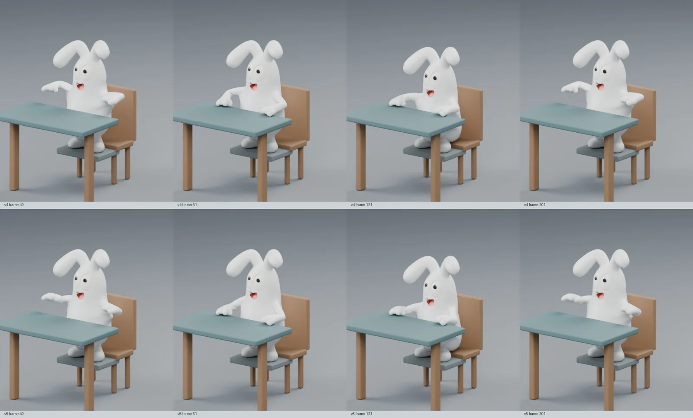

바닥 춤의 골반 국소 보정 v26은 접힘을 충분히 줄이지 못해 채택하지 않았습니다. 위 착석 수정과 별도입니다.
UNITY PLAY / 11.15 07:52
압력실의 벽등을 실제 벽과 조명에 맞췄습니다.
양쪽 벽에 철망등을6개씩 달았습니다. 공중에 떠 있던 이전 등10개는 이 방에서 제외하고, 벽등12개에 실제 광원과 작은 고정 충돌을 넣었습니다. 기존 천장등은 밝기를 낮춘 보조등으로 남겼습니다.
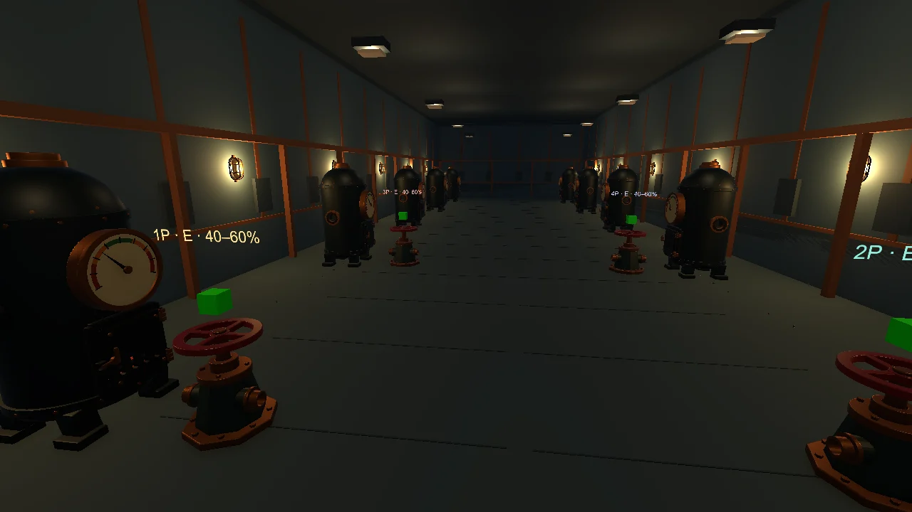
실제 Play에서 벽 접촉·조명 방향을 확인하고, 중앙 통로3곳을 각각12m 이동했습니다. 네 밸브 앞 접근 공간도 비어 있습니다. 광원을 끄고 켠 같은 카메라의 화면을 비교해 벽과 바닥에 빛이 닿는 것을 확인했습니다.
보행은 CharacterController 이동을 스크립트로 검사했습니다. 캡슐부터 전체 진행을 검증한 결과는 아닙니다. 이 시점에는 보일러·독립 압력계 교체도 남아 있었으며 최신 반영은 위10:45 기록을 따릅니다. 새 천장등·배관 연결·손잡기 모션은 계속 작업 중입니다. Play는 종료했고 열린 씬은 변경하지 않았습니다.
UNITY PLAY / 11.15 06:54
압력실의 임시 조작물을 실제 밸브로.
네 밸브를2×2로 배치했습니다. 받침은 고정하고 윗바퀴만 수직 축으로 돌아갑니다. E 입력 뒤 압력이 오르고, 놓으면 압력이 내려가며 바퀴가 감속해 멈춥니다. 봇 세 명의 접근도 확인했습니다.
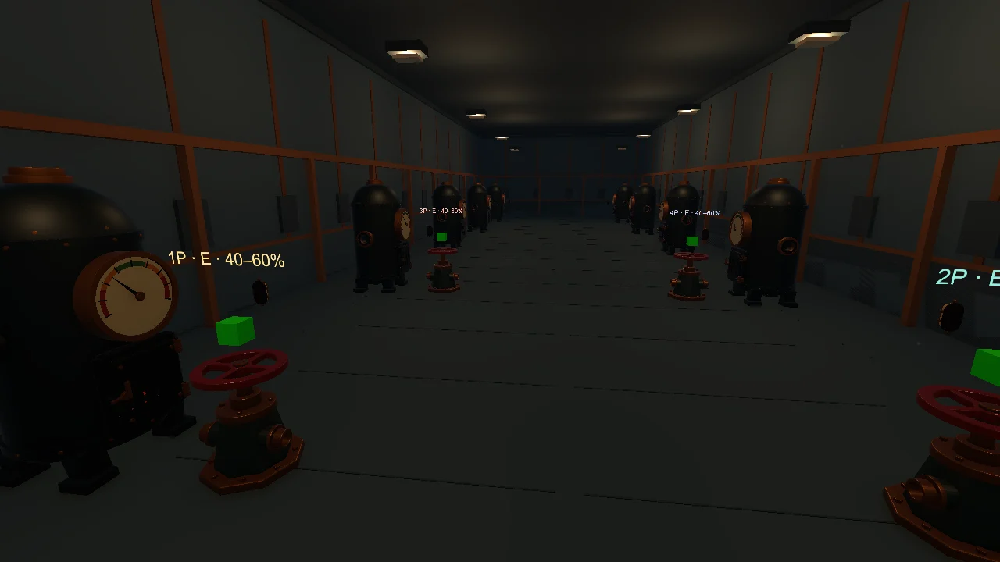
물건별 복합 충돌92개. 실제 Play에서 중앙 통로3곳을 각각12m 이동했고 밸브에 걸어 들어가면 멈췄습니다. 입력은 가상 키보드 이벤트, 보행 충돌은 스크립트 검사이며 전체 미니게임 승리나 사용자 승인을 뜻하지 않습니다. 손 접촉 애니메이션·전용 소리·배관은 남아 있습니다. 테스트 Play는 종료했습니다.
UNITY PLAY / 11.15 05:09
공방의 벽과 지붕 구조를 세웠습니다.
16×20m 공방에 목조 벽 모듈20개와 천장 트러스4개를 넣었습니다. 기둥과 겹치던14개 작업대의 위치, 큰 시계와 뒤쪽 문의 벽 간격도 맞췄습니다. 기존18종 소품과 선반 보관통·아래 수납 상자는 유지합니다.
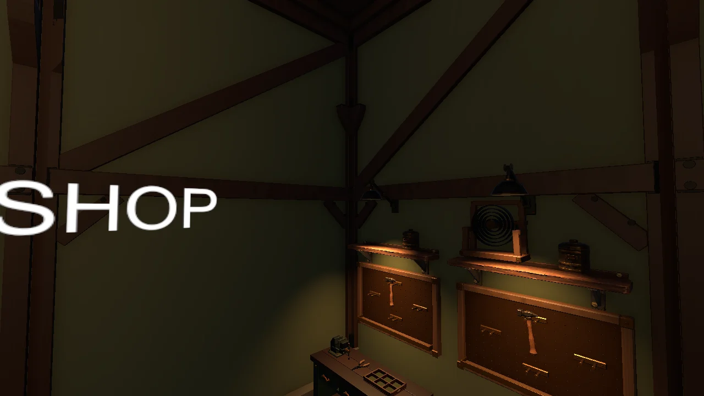
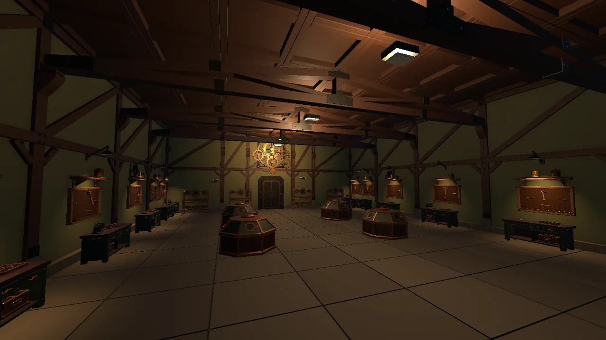
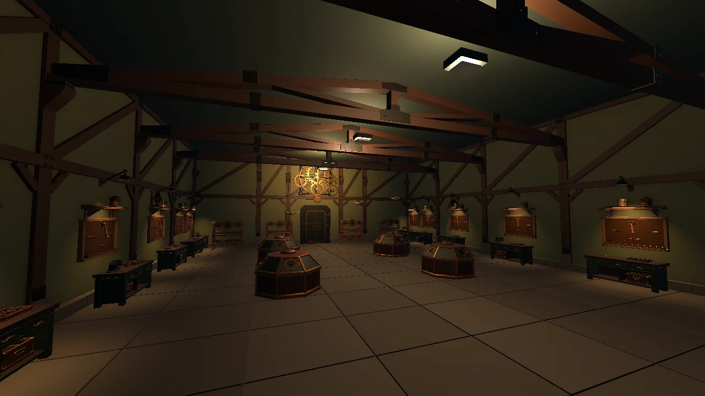
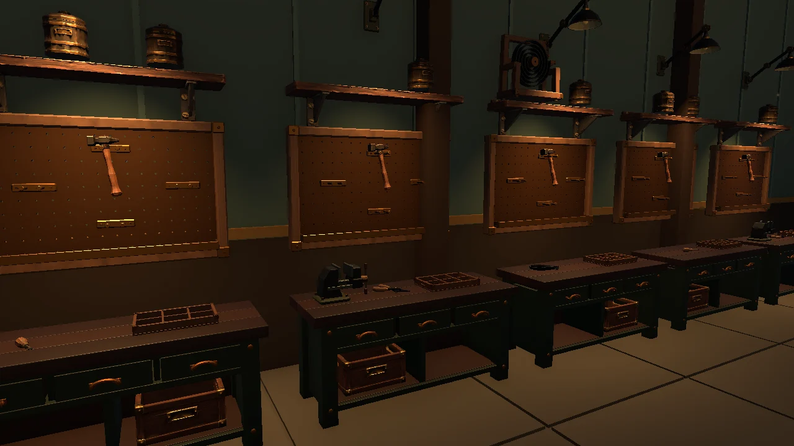
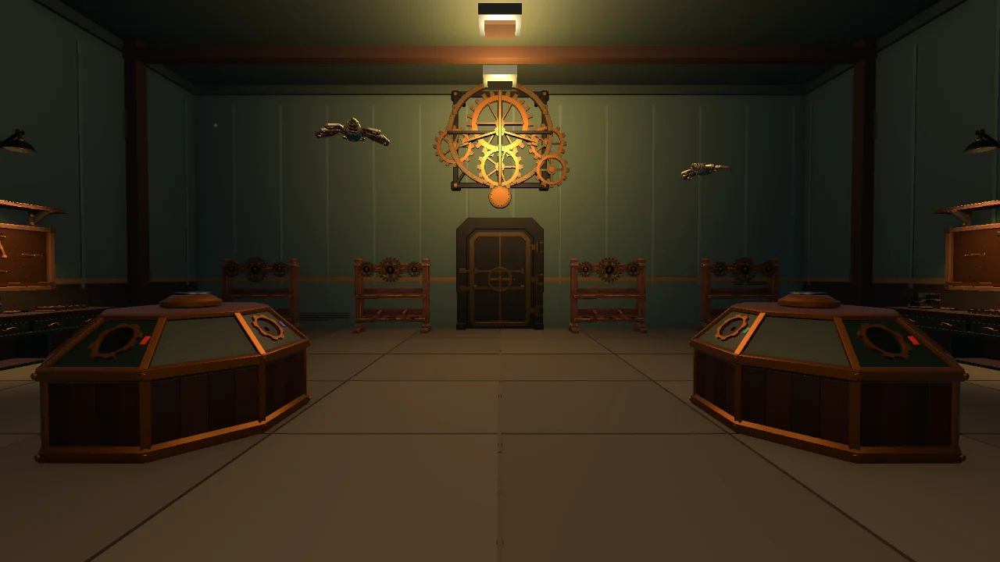
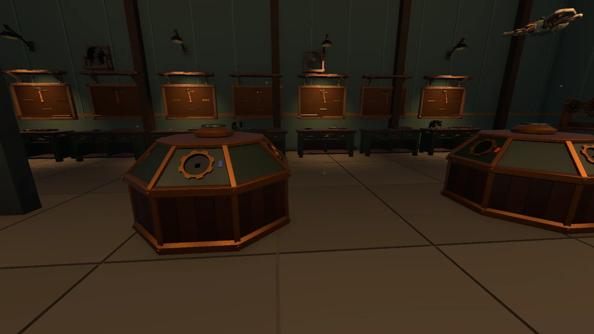
새 구조물에215개 부품 충돌을 구성했습니다. Play에서 트러스 받침8곳, 입구 여유 공간6곳, 시계 장착점4곳과 수납물32개의 충돌을 확인했고 세 통로는 각각12m를 통과했습니다. 스크립트로 방을 활성화한 물리 검사이며 키보드·캡슐 여정이나 미니게임 전체 완주를 재검증한 것은 아닙니다. Play는 종료했습니다. 이후 바닥·천장·모서리 후보는 위 갱신 기록에 반영했습니다. 시계·스프링·문 동작과 나머지 소품 배치는 후속 작업입니다.
ROOM ART / CANDIDATES
어떤 방을 만들고 있나.
전체 분위기부터 물건을 놓는 이유까지. 아래는 시안과 Blender 조립 후보이며, 게임 반영 상태는 위 Play 기록과 따로 표시합니다.


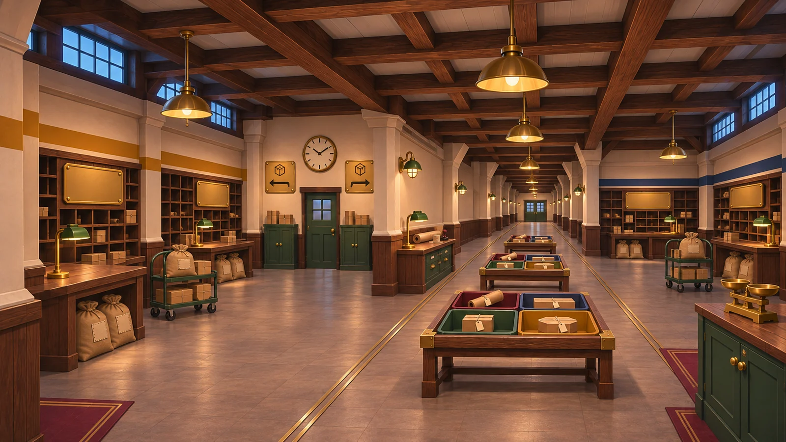

CHARACTER POLISH / WORK IN PROGRESS
몸체는 그대로, 치장은 따로.
체형과 얼굴을 유지한 네 기본 몸체입니다. 기본색은 중립색으로 두고 가방·스카프·머리띠·파우치는 독립 착용물로 준비했습니다.


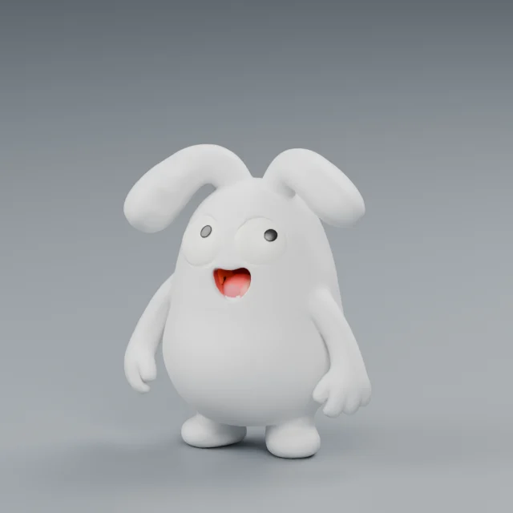
11/15 07:35 · SEATED HAND CONTACT / CANDIDATE
손을 놓고 앉는 자세를 다시 맞췄습니다.
손 모양과 팔 길이를 유지하면서 팔꿈치 방향·손바닥 지지면·탁자 간격을 조정한8초 후보입니다. 손을 올리고 내리는 시간도 늘렸습니다.120장 렌더와 내보내기 대조를 확인했습니다.
몸통 주름과 의자까지 접근·오르기는 남아 있습니다. 서서 짚는 구간의 손목 각도가 커진 부분도 있어 완성본으로 판정하지 않았습니다. Unity에는 아직 적용하지 않았습니다.
착석 GIF와 손 확대 비교 →11/15 07:12 · FOOT ROLL / COMPARISON
뒤꿈치부터 발끝으로 딛는 작은 걸음
발 모양과 손·팔 길이를 유지하면서 발 전체를 작게 굴리는1.6초 비교안입니다. 실제 발바닥 곡면에 맞춰 접지 궤적을 계산했습니다.48장 렌더와 내보내기 대조를 확인했습니다.
발목 안쪽 주름은 남고 종아리의 최대 프레임 간 회전도 기존보다 커졌습니다. 전체 개선·완성으로 판정하지 않고 기존v7과 비교 후보로 보존합니다. 게임 속도 맞춤·연속 재생 검토·Unity 적용·다른 체형·사용자 승인은 아직입니다.
보행 GIF와 발 확대 비교 →11/15 06:35 · WALKING REVISION / CANDIDATE
발을 내딛는 구간을 더 부드럽게
발의 이동 곡선과 무릎 여유를 조정해 종아리의 최대 프레임 간 회전을11.7도에서8.3도로 줄였습니다. 손 모양과 팔 길이·원래 메시를 유지했습니다.
저속 보행 후보입니다. 06:54 검토한 넓고 빠른 보폭 실험은 발목·무릎 급변이 커져 채택하지 않았습니다. 발목 안쪽 주름·실제 게임 속도 맞춤·다른 체형·Unity 적용은 남았습니다. 제자리 GIF와3.2초 전진 미리보기를 함께 올렸습니다.
제자리 GIF와 전진 미리보기 →11/15 04:58 · NEW TAUNT / CANDIDATE
손을 내밀어 “이리 와” · 새 도발
손바닥을 위로 들어 세 번 부르는4.8초 동작입니다. 손 모양과 팔 길이를 유지하고 팔꿈치와 작은 손목 회전으로 움직입니다.
72장 실제 Blender 렌더, 메시·UV·본 길이·손 가중치 보존과 내보내기 대조를 확인했습니다. 자세 시트 검토이며 연속 영상 재생 검토와는 구분합니다. 손가락별 동작·다른 체형·Unity 적용·사용자 승인은 남아 있습니다. 바닥 춤의 배·다리 접힘도 계속 수정 중입니다.
GIF와 16시점 자세 보기 →11/15 · NEW REVISION / CANDIDATE
뒤돌기 아랫배 주름 조정 · 청록 v9
뒤돌 때의 아랫배 접힘을 국소 보정했습니다. 깊은 바닥 자세는 이전 후보와 같으며 계속 수정 중입니다. 원래 손바닥 형태와 본 길이, 손·발 접지를 유지한12초 후보입니다.
배·겨드랑이 실루엣과 전체 동작의 자연스러움은 계속 다듬고 있습니다. 05:16까지 시험한 무릎 지지 자세와 골반 가중치 후보도 접힘·바닥 관통이 남아 채택하지 않았습니다. 이 영상은 앞선 v9 후보이며 착석·다른 체형·Unity에는 아직 적용하지 않았습니다.
반복 미리보기와 자세 검토 →청록 · 손과 팔 FK 비교 동작
본 길이와 손바닥 형태를 유지하는 작은 비교 동작입니다. 요청한 웃긴 춤 3종의 완성본은 아닙니다. 바닥 지지 춤과 착석 전환은 계속 수정합니다.
캐릭터 수정 상태 자세히 →